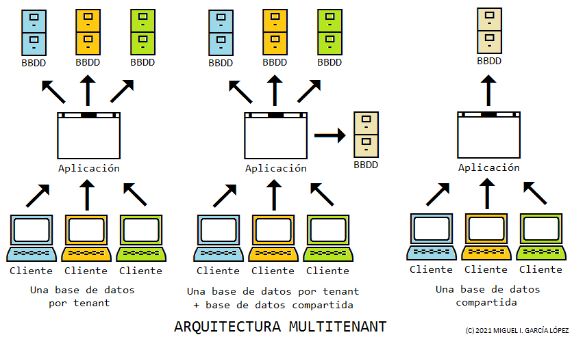

Arquitectura multitenant (II)
August 28, 2021 | ES
 Miguel García
Miguel García
Almacenamiento y gestión de los datos.
Introducción
Tal y como se vio en la anterior entrega, los planteamientos más utilizados a la hora de definir el almacenamiento y gestión de los datos en un entorno multitenant, suelen ser:
- Una base de datos por cada tenant.
- Una base de datos por cada tenant y otra compartida por todos ellos.
- Una base de datos compartida por todos los tenants.
Cada uno de estos enfoques tiene sus ventajas e inconvenientes, e incluso una mayor orientación a determinado tipo de aplicaciones, por lo que voy a tratar cada uno de ellos por separado.
Conviene recordar, que sea cual sea el planteamiento seleccionado, es de vital importancia la estanqueidad de los datos de cada tenant, es decir, un tenant no debería poder acceder jamás a los datos de otro.

Una base de datos por tenant
Bajo mi punto de vista, este planteamiento es el que mayor flexibilidad y posibilidades ofrece, al tiempo que plantea menos complicaciones en cuanto a gestión de los datos.
Dado que cada tenant tiene su propia base de datos, la estanqueidad de los mismos está asegurada.
Por otra parte, este sistema puede facilitar la gestión de actualizaciones del software, ya que, si la aplicación lo permite, sería posible la coexistencia de diferentes versiones del esquema de la base de datos.
Esto permitiría escalonar la actualización del esquema de la base de datos, según nuestras necesidades o la de nuestros clientes.
Una desventaja de este enfoque es la gestión de usuarios administradores de la aplicación (es decir, nuestros usuarios, no los de cada tenant).
Son los usuarios (superusuarios, si se prefiere) que tienen potestad para gestionar tenants, actualizar el esquema de la base de datos, monitorizar la aplicación, etc.
Al tener una base de datos por cada tenant, no quedaría más remedio que almacenar los mismos usuarios administradores en cada una de ellas, complicando su gestión y utilizando mayor espacio de almacenamiento.
Este problema se agudiza si, además, almacenamos en la base de datos determinados valores de configuración de ámbito global de la aplicación.
Una base de datos por tenant más otra compartida
Este enfoque es idéntico al anterior, es decir, una base de datos para cada tenant, con una variación importante, la de añadir otra base de datos compartida por todos ellos.
La función de dicha base de datos compartida, sería la de almacenar los usuarios administradores de la aplicación, así como la configuración global de la misma, en caso de existir.
De esta forma, se facilitaría la gestión de la aplicación.
Una base de datos compartida por los tenants
Este planteamiento, tiene como ventaja más obvia el que únicamente debemos gestionar una base de datos.
En cuanto a la actualización del esquema de la base de datos, tiene como ventaja que dicha actualización tendrá efecto sobre todos los tenants, lo cual, según se mire, puede acabar siendo una desventaja, en el caso de que se produzca algún tipo de problema tras realizar el proceso.
Por otra parte, es de esperar una mayor dificultad a la hora de mantener la estanqueidad e integridad de los datos de cada tenant.
Si en los enfoques anteriores identificábamos los datos de un tenant a nivel de base de datos, en este caso tendríamos que hacerlo a un nivel inferior.
Un par de posibilidades serían:
- a nivel de tablas.
- a nivel de registros.
Una forma de relacionar las tablas con un tenant determinado, podría ser mediante la utilización de prefijos en los nombres de las mismas.
Por ejemplo, si al tenant "Técnicos de Investigación Aeroterráquea", le asignáramos el prefijo "TIA", sería posible nombrar las tablas como sigue:
- TIA_agentes
- TIA_casos
De esta forma, la aplicación tan solo necesitaría conocer el prefijo correspondiente al tenant, para trabajar con las tablas correctas.
Es necesario señalar, que este enfoque podría entrar en conflicto, con el número máximo de tablas que permita gestionar el motor de base de datos.
En cuanto a la identificación del tenant a nivel de registros, sería preciso establecer una columna (campo, atributo...) en todas las tablas, que almacenase dicho dato.
Por ejemplo, en la tabla agentes:
- tenant_id
- agente_id
- nombre
- apellidos
- numero_placa
Este planteamiento, más común de lo que pudiera parecer, complica en mucho la gestión de los datos, influyendo en el código de la aplicación, ya que cada entidad de la misma, ha de tener dicho atributo.
Por otra parte, la gestión de los usuarios administradores y los valores de configuración, no debería plantear problema alguno, ya que sus datos se almacenarán en sus correspondientes tablas.
Conclusiones
En mi opinión, el enfoque más interesante es el correspondiente a una base de datos por tenant más otra compartida, pues permite:
- estanqueidad de los datos de cada tenant.
- coexistencia de diferentes versiones del esquema de la base de datos.
- gestión más sencilla de los usuarios administradores y la configuración de la aplicación.
Por otra parte, tal y como se indicó en la anterior entrega, siempre hay que tener en cuenta determinados factores que podrían inclinar la balanza hacia una solución de compromiso, aunque técnicamente no sea la mejor:
- Infraestructura disponible.
- Recursos económicos.
- Etc.
En la próxima entrega, trataré de profundizar en la parte de aplicación.